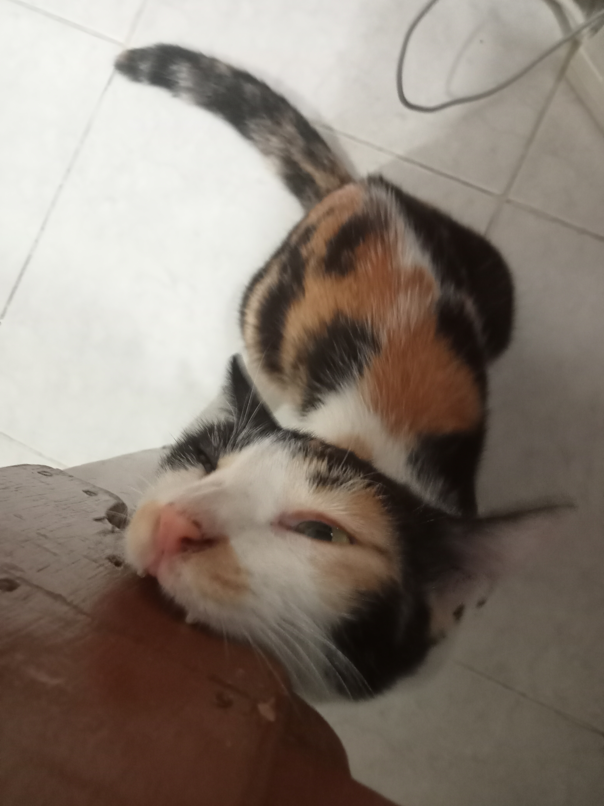

Hi, I am Pulok Akibuzzaman, a Computer Science and Engineering student at East West University, Dhaka. I am passionate about programming, system development, and cybersecurity. I really love what I do.
Hi, I am Pulok Akibuzzaman, a Computer Science and Engineering student at East West University, Dhaka.
I am passionate about programming, system development, and emerging fields like cybersecurity. Currently, I am pursuing a B.Sc in Computer Science and Engineering (CSE) with a CGPA of 3.85/4.00. I have completed 83 credits and received both a Merit Scholarship and Dean's Scholarship.
My technical skills include proficiency in C, C++, Java, Python, and SQL, along with experience in tools like Git, VS Code, and LaTeX. I am also actively involved in research on Opportunistic Networks (OppNets) and Delay-Tolerant Networks (DTNs).
Here are some highlights of my professional experience and projects.
Research Assistant (Jan 2025 – Present)
Conducting research on Opportunistic Networks (OppNets), Delay-Tolerant Networks (DTNs), and Content-Centric Networking (CCN) using The ONE Simulator. Supporting simulation post-processing, data visualization, and literature review.
Tutor (Aug 2023 – July 2024)
Tutored students from Play Group to Class 10 in multiple subjects, delivering coaching, home, and online tutoring sessions. Prepared lesson plans and supported exam preparation.
Projects:
I'm based in Dhaka, Bangladesh. Feel free to reach out to me via email or connect with me on LinkedIn and GitHub.